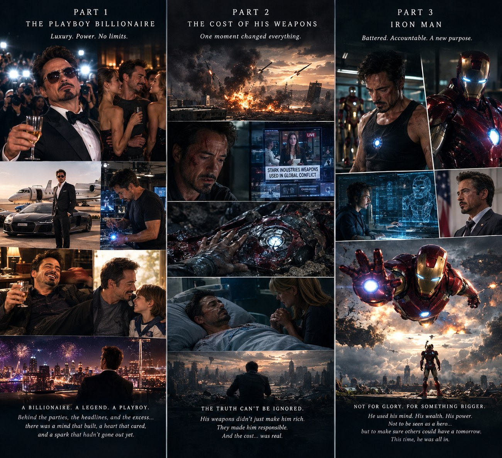

Iron Man
Anthony Edward Stark. Engineer, arms dealer, Avenger, in that order.

At a glance
- Universe
- Marvel Cinematic Universe
- First appearance
- Iron Man (2008)
- Species
- Human
- Role
- Founding Avenger
- Base
- Malibu, then Stark Tower
- Power
Stark is one of the few heroes whose power can be taken away completely. Remove the suit and what is left is the part that matters: someone who can look at a problem for an afternoon and come back with a working answer.
Backstory
Tony inherits Stark Industries young and runs it the way he runs everything else — brilliantly, and without asking many questions. A weapons demonstration in Afghanistan ends with him wounded, captured, and looking at his own company's weapons pointed back at him.
He builds the first armor out of scrap while he is held prisoner, escapes, and shuts down the weapons division on the same day he gets home. The suits he builds after that are his way of making up for it.
Abilities
- Powered armor. Flight, strength, repulsors and a suit that gets rebuilt after every fight it barely survives.
- Engineering. The real superpower. He designs faster than most companies can approve a budget.
- Arc reactor. A clean power source small enough to sit in his chest, originally built to keep him alive.
- J.A.R.V.I.S. An AI that runs the suit, the house, and a fair share of the sarcasm.
Personality
Loud, funny and impossible to manage. He jokes his way past anything serious, usually because he does not want to talk about it.
He is also the one who stays up running the numbers on the thing nobody else wants to think about. Most of his worst decisions come from trying to solve a problem before it arrives.
Why he made the list
A lot of heroes are born with their abilities. Stark builds his, improves them, and breaks them constantly, which is closer to how actual work feels than an origin story built on a lucky accident.